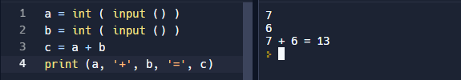
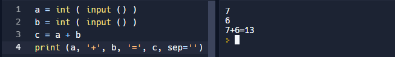
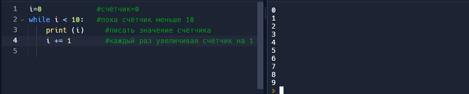

За вывод данных овечает функция print
В Python текст заключен в кавычках.
Переменными назначаются имена, в них записываются значения, и затем они используются в программе по мере необходимости.
«=» - оператор присваивания
За вывод данных овечает функция print
В Python текст заключен в кавычках.
За ввод данных с клавиатуры овечает функция input
Программа ждет, когда вы введёте число, а далее нажмёте Enter.
С такими числами НЕЛЬЗЯ проводить вычисления
Для этого понадобиться использовать ранее полученную информацию, например, преобразить число в целое.
Для того, чтобы ввести сразу несколько значений в одну строку надо применить
a, b = map ( int, input().split() )
Попробуем применить ранее полученную информацию на практике.

Стоит заметить, что между значениями присустствуют пробелы, для того, чтобы их убрать надо использовать команду sep=''

Условный оператор используется в том случае, когда требуется, чтобы код выполнялся при определённых условиях.
Цикл – это многократное выполнение одинаковых действий.
